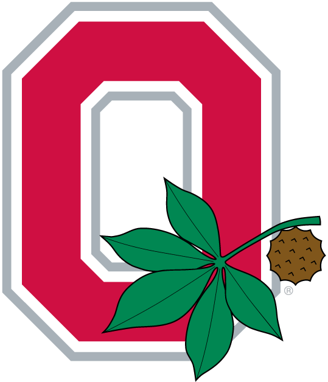

Skills
Technical
- Programming Languages: JavaScript, Ruby, Python, HTML5, CSS3, SQL, XML, JSON, Java, C++, C, Assembly x86, Matlab
- Frontend: React, Bootstrap, JavaScript DOM Manipulation, Responsive Design
- Backend: Ruby on Rails, Flask, RESTful API development
- Database: PostgreSQL, SQL, SQLite, Elasticsearch
- Tools & Platforms: Docker, Git and Github, Heroku, VS Code, Monogame, .NET Frameworks
- SWE Practices: Agile Methodology (Scrum), TDD, Code Documentation
Creative
- Drawing and illustration
- Digital design for signs and artwork
- Creative writing (character/story creation)
- Custom UI/UX design for games and web apps
Soft Skills
- Adaptability
- Collaboration
- Project Ownership
- Accessibility
- Time Management
Complete Job History
Panera Bread - Shift Supervisor | May 2018 - April 2020 & April 2025 - Present
- Created and reorganized a weekly schedule of 30-50 employees according to entertainment events, and staffing issues.
- Communicated effectively with each associate to organize availability preferences.
- Assisted supervisor with daily operations of the store including food preparation, speed of service, and cleanliness.
- Supervised 10-15 associates during peak times to maintain the aforementioned standards.
- Balanced financial records during non-peak hours.
- Mediated and managed different customer criticisms
Panera Bread - Production Team Lead Oct 2017 - May 2018 | Dec 2022 - April 2025
- Maintained high standards of customer service during high-volume, fast-paced operations
- Followed procedures for safe food preparation, assembly, and presentation, and resolve complaints promptly and professionally while performing pre-closing duties such as stocking and cleaning in order to provide a timely and efficient close each night.
Panera Bread - Baker Oct 2022 - Dec 2022
- Worked quickly and efficiently overnight at various cafes to bake and decorate the bread and pastries for the store the next day
- Ensured a clean work environment throughout the shift
Nordstrom - Barista/Server July 2021 - Oct 2022
- Worked independently and with team members to provide quality coffee and tea beverages.
- Helped to create a seasonal barista menu.
- Would occasionally serve in the restaurant as needed.
Taranto's Pizzeria - Assistant Manager Jan 2021 - July 2021
- Simultaneously managed FOH and kitchen while maintaining speed of service, cleanliness, and an inviting dine in atmosphere.
- Handled closing tasks each evening to the utmost standards.
- Built friendly relations with staff to improve the overall work culture of the store.
The Ohio State University - Grader for CSE 1223 Aug 2020 - May 2021
- Graded homework and coding projects for CSE 1223: Intro to Java
- Held office hours multiple times a week for homework/project help and general coding questions
- Provided quality feedback on assignments to ensure thorough understanding of key concepts
Arby's - Team Leader Apr 2018 - Aug 2019
- Worked as the main closing manager.
- Key responsibilities include organization of work zones, time management plans, develop interpersonal relationships with staff, delegate work during peak and non-peak periods, creating and implementing problem-solving strategies
Arby's - Team Member Aug 2014 - Apr 2018
- Worked as the main food line closer and as a mid-shift crew member.
- Key responsibilities include: maintaining a clean and sanitary environment, providing quick and accurate production of food, completed necessary prep for rush periods, and helped close the store in a timely manner
Education
The Ohio State University - Bachelor's of Science in Computer Science and Engineering: Individualized Specialization
Major GPA: 3.3 | Dean's List | Humanitarian Engineering Scholars Program
Self-financed 86% of tuition
Strengths
- Passion for clean, maintainable code
- Strong communicator and team player
- Fast learner with a proactive attitude